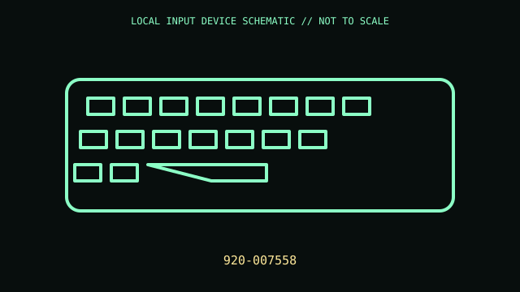

[ KEYBOARDS AND INTEGRATED POINTING DEVICES // IDENTIFIED COMPONENT ]
Logitech K380 Multi-Device Bluetooth Keyboard
Compact keyboard that switches among three paired Bluetooth hosts.

MODEL IDENTIFICATION: 920-007558. Confirm the printed SKU, revision, bundle, region, and included accessories before repair or compatibility claims.
Model specifications
| Catalog leaf | Keyboards and integrated pointing devices |
|---|---|
| Exact model / identifier | 920-007558 |
| Mechanism and primary specifications | 79-key compact layout; Bluetooth LE; Easy-Switch for up to three hosts; two AAA cells; approximately 279 × 124 × 16 mm. |
| Compatibility and interface caveats | No USB receiver is supplied; host-specific function-row mappings vary. Check regional layout/color PID; K380 and newer K380s have different feature sets. |
| Revision identification | Record the full label and software/firmware revision. Similar product-family names may use different protocols, components, connectors, or bundled accessories. |
Preservation and service
Remove cells for long storage, keep labels/feet intact, and avoid liquid around scissor mechanisms.
Separate observed condition and test setup from vendor-published specifications; record host OS, driver/app version, cables, adapters, and accessories.
Primary manufacturer sources
- Logitech K380 product pageManufacturer documentation; verify the exact SKU, revision, region, and accessories against the unit label.
- Logitech K380 supportManufacturer documentation; verify the exact SKU, revision, region, and accessories against the unit label.
Manufacturer support pages can change; retain the applicable manual and its revision in the physical equipment record.